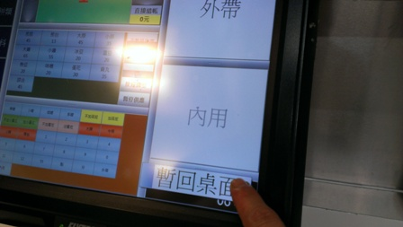
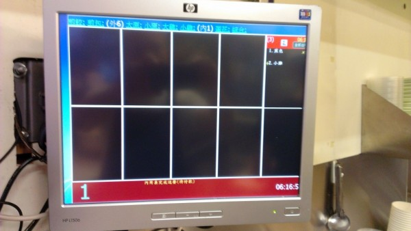

1、使用"暫回桌面"再回到點餐畫面時，

第二螢幕變成這樣：

畫面的右邊不見了!
是否可以修正？謝謝
2、電話訂餐時，有時會聽不清楚對方的聲音而輸錯號碼，而清除鍵會把號碼全部清除，是否可增加後退鍵或直接從錯誤處重新輸入？請站長幫幫忙？
3、可否在加點畫面上加入"直接結賬"鍵？因為很多時候客人是在用餐後結賬時才加點外帶，可是加點後按下確定，畫面會回到點餐畫面，這時再重新去找單子會浪費很多時間，很不方便。這點也請站長想想辦法，謝謝
4、拆單結賬時，常常是一群人在等候結賬, 跟加點一樣，如果結完B單，畫面回到點餐畫面，再回頭找A單，反覆數次，也會浪費很多時間，是否也請站長修正一下？
不好意思一次提這麼多問題，也請站長多多包涵，謝謝